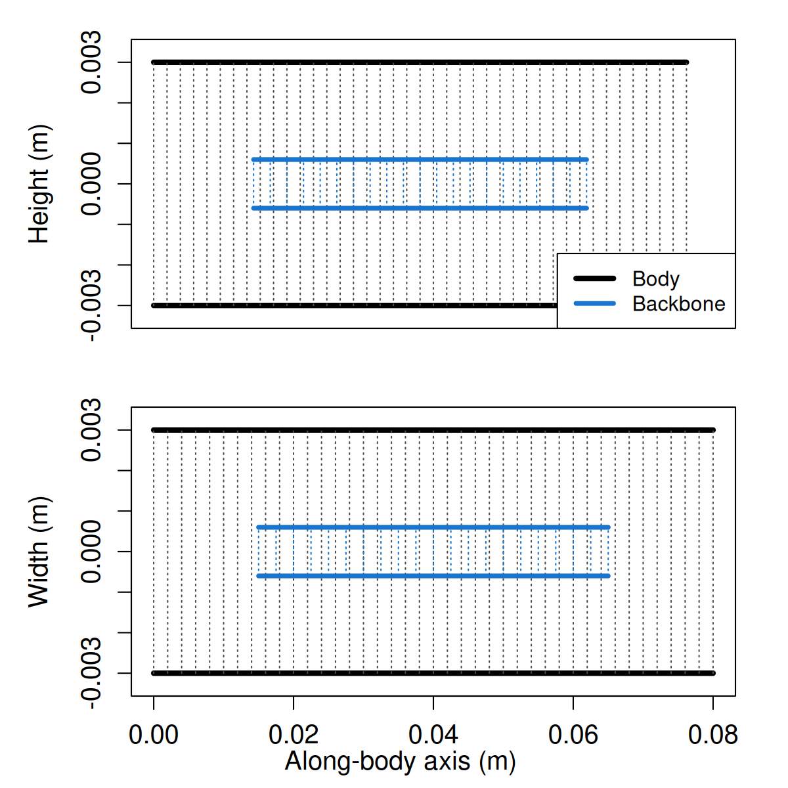

acousticTS implementation
This family is best read alongside the swimbladder-less fish and composite-scatterer literature that motivates explicit flesh-body and backbone terms (Gorska, Ona, and Korneliussen 2005; Stanton, Chu, and Wiebe 1998; Clay and Horne 1994).
The body-backbone fish model is available through
target_strength(..., model = "bbfm"). It is intended for
swimbladder-less targets whose flesh body and backbone should remain
acoustically explicit components rather than being collapsed into a
single effective medium.
In practice, BBFM is the package’s composite
body-plus-backbone family:
- the flesh body is evaluated with
DWBA, - the backbone is evaluated with
ECMS, - the backbone term is translated into the body frame with a two-way phase factor, and
- the two complex amplitudes are summed coherently before
sigma_bsandTSare reported.
BBFM is an experimental family. The package documents
the composite bookkeeping and verifies that the stored result reproduces
the stated component sum, but it does not yet provide an external
benchmark ladder or a separate public software comparison.
BBFM is not a fully coupled three-medium boundary-value
solve. The flesh body and the backbone are each solved as their own
seawater-referenced component problem and then combined coherently in a
shared body frame. That is why the family is useful as a transparent
composite scaffold, but it is also why it should not yet be read as a
fully embedded elastic-backbone theory.
Why use BBFM?
BBFM is useful when a swimbladder-less target is poorly
described by either of the simpler extremes:
- a body-only weak-scattering model that ignores the backbone entirely, or
- a single canonical exact geometry that forces all anatomy into one material region.
The family exists to preserve the two main acoustic contributors separately:
- flesh-like soft tissue, which is usually the weak-contrast extended body component, and
- the backbone, which is much stiffer and behaves more like an internal elastic cylinder than like another weak fluid inclusion.
That makes BBFM a natural intermediate model between a
body-only approximation and a future fully coupled composite solver.
Reference workflow
The recommended workflow is:
- build a
Shapefor the flesh body, - build a
Shapefor the backbone, - create a
BBFscatterer withbbf_generate(), and - evaluate that object with
target_strength(..., model = "bbfm").
The reference example below keeps the geometry deliberately simple: a straight fluid-like body with an internal elastic cylindrical backbone offset along the body axis.
library(acousticTS)
body_shape <- cylinder(
length_body = 0.08,
radius_body = 0.003,
n_segments = 40
)
backbone_shape <- cylinder(
length_body = 0.05,
radius_body = 0.0006,
n_segments = 20
)
bbf_object <- bbf_generate(
body_shape = body_shape,
backbone_shape = backbone_shape,
density_body = 1070,
sound_speed_body = 1570,
density_backbone = 1900,
sound_speed_longitudinal_backbone = 3500,
sound_speed_transversal_backbone = 1700,
x_offset_backbone = 0.015
)
bbf_object <- target_strength(
object = bbf_object,
frequency = seq(10e3, 120e3, by = 2e3),
model = "bbfm",
density_sw = 1026.8,
sound_speed_sw = 1477.3
)
head(extract(bbf_object, "model")$BBFM)## frequency ka_body ka_backbone f_body
## 1 10000 0.1275946 0.02551893 -5.801423e-05-1.137328e-20i
## 2 12000 0.1531136 0.03062271 -8.327520e-05-1.959061e-20i
## 3 14000 0.1786325 0.03572650 -1.129211e-04-3.099232e-20i
## 4 16000 0.2041514 0.04083028 -1.468488e-04-4.606187e-20i
## 5 18000 0.2296703 0.04593407 -1.849405e-04-6.526129e-20i
## 6 20000 0.2551893 0.05103786 -2.270635e-04-8.902834e-20i
## f_backbone f_backbone_aligned
## 1 -1.196018e-05+2.431034e-09i -1.196018e-05+2.431034e-09i
## 2 -1.721597e-05+5.034706e-09i -1.721597e-05+5.034706e-09i
## 3 -2.342237e-05+9.314319e-09i -2.342237e-05+9.314319e-09i
## 4 -3.057702e-05+1.586518e-08i -3.057702e-05+1.586518e-08i
## 5 -3.867731e-05+2.537004e-08i -3.867731e-05+2.537004e-08i
## 6 -4.772033e-05+3.859762e-08i -4.772033e-05+3.859762e-08i
## f_bs sigma_body sigma_backbone sigma_bs
## 1 -6.997441e-05+2.431034e-09i 3.365650e-09 1.430459e-10 4.896418e-09
## 2 -1.004912e-04+5.034706e-09i 6.934759e-09 2.963898e-10 1.009848e-08
## 3 -1.363434e-04+9.314319e-09i 1.275117e-08 5.486073e-10 1.858953e-08
## 4 -1.774259e-04+1.586518e-08i 2.156458e-08 9.349545e-10 3.147993e-08
## 5 -2.236178e-04+2.537004e-08i 3.420300e-08 1.495935e-09 5.000494e-08
## 6 -2.747838e-04+3.859762e-08i 5.155781e-08 2.277231e-09 7.550613e-08
## TS_body TS_backbone TS
## 1 -84.72931 -98.44524 -83.10122
## 2 -81.58969 -95.28137 -79.95744
## 3 -78.94450 -92.60738 -77.30732
## 4 -76.66259 -90.29210 -75.01966
## 5 -74.65936 -88.25087 -73.00987
## 6 -72.87706 -86.42593 -71.22018Example outputs
Shape geometry
The shape plot below shows the body-plus-backbone composite geometry used by the reference example. The important point is that the backbone is retained as its own internal component, with its own geometry and stored offset, rather than being folded into a single effective body region.

Stored model outputs
The BBFM output table keeps the component bookkeeping
explicit instead of returning only a final TS column.
| Column | Meaning |
|---|---|
frequency |
Acoustic frequency in Hz |
ka_body |
Body acoustic size returned by the DWBA
body solve |
ka_backbone |
Backbone acoustic size returned by the
ECMS backbone solve |
f_body |
Flesh-body complex backscattering amplitude from
DWBA
|
f_backbone |
Backbone complex backscattering amplitude before placement |
f_backbone_aligned |
Backbone amplitude after centroid-based phase translation into the body frame |
f_bs |
Total coherent backscattering amplitude |
sigma_body |
Flesh-body backscattering cross-section |
sigma_backbone |
Aligned-backbone backscattering cross-section |
sigma_bs |
Total backscattering cross-section |
TS_body |
Flesh-body target strength |
TS_backbone |
Backbone target strength |
TS |
Total composite target strength |
Those columns make it possible to inspect not just the final spectrum, but also which part of the result comes from the body, which part comes from the backbone, and how much of the composite behavior is due to coherent interference between them.
Internal consistency check
The first validation step for BBFM is to confirm that
the stored composite result equals the component-wise reconstruction
implied by the model design:
- re-evaluate the flesh body as
DWBA, - re-evaluate the backbone as
ECMS, - apply the centroid-based phase translation, and
- compare that explicit reconstruction against the stored
BBFMoutput.
bbfm_out <- extract(bbf_object, "model")$BBFM
body_object <- methods::new("FLS",
metadata = list(ID = "body"),
model_parameters = list(),
model = list(),
body = extract(bbf_object, "body"),
shape_parameters = extract(bbf_object, c("shape_parameters", "body"))
)
body_object <- target_strength(
object = body_object,
frequency = bbfm_out$frequency,
model = "dwba",
density_sw = 1026.8,
sound_speed_sw = 1477.3
)
backbone_object <- methods::new("FLS",
metadata = list(ID = "backbone"),
model_parameters = list(),
model = list(),
body = extract(bbf_object, "backbone"),
shape_parameters = extract(bbf_object, c("shape_parameters", "backbone"))
)
backbone_object <- target_strength(
object = backbone_object,
frequency = bbfm_out$frequency,
model = "ecms",
density_sw = 1026.8,
sound_speed_sw = 1477.3,
density_body = extract(bbf_object, c("backbone", "density")),
sound_speed_longitudinal_body = extract(
bbf_object,
c("backbone", "sound_speed_longitudinal")
),
sound_speed_transversal_body = extract(
bbf_object,
c("backbone", "sound_speed_transversal")
)
)
backbone_body <- extract(backbone_object, "body")
x_center <- mean(range(backbone_body$rpos["x", ], na.rm = TRUE))
z_center <- mean(range(backbone_body$rpos["z", ], na.rm = TRUE))
phase_shift <- exp(
2i * acousticTS::wavenumber(bbfm_out$frequency, 1477.3) *
(x_center * cos(backbone_body$theta) + z_center * sin(backbone_body$theta))
)
reconstructed_fbs <-
extract(body_object, "model")$DWBA$f_bs +
extract(backbone_object, "model")$ECMS$f_bs * phase_shift
bbfm_check <- data.frame(
frequency_kHz = bbfm_out$frequency * 1e-3,
delta_f_bs = Mod(bbfm_out$f_bs - reconstructed_fbs),
delta_TS_dB = bbfm_out$TS - 10 * log10(abs(reconstructed_fbs)^2)
)
knitr::kable(
data.frame(
quantity = c("Max $|\\Delta f_{bs}|$", "Max $|\\Delta TS|$ (dB)"),
value = c(
max(bbfm_check$delta_f_bs),
max(abs(bbfm_check$delta_TS_dB))
)
),
digits = 6
)| quantity | value |
|---|---|
| Max |\Delta f_{bs}| | 0 |
| Max |\Delta TS| (dB) | 0 |
For this reconstruction check, those \Delta values should collapse to floating-point noise. That does not replace an external benchmark, but it does verify that the family is carrying out the coherent composite sum it claims to perform.
How to interpret the result
The most important interpretive point is that the final
TS curve is not just the arithmetic sum of
TS_body and TS_backbone. The model works in
complex amplitude space:
-
f_bodycontributes the flesh-body term, -
f_backbone_alignedcontributes the backbone term after spatial placement, -
f_bsis the coherent sum of those two complex amplitudes.
That means the total TS can be:
- larger than either component alone when the phases align constructively, or
- smaller than the linear sum of the component cross-sections when the phases interfere destructively.
This is exactly why BBFM is useful. It preserves the
anatomy-specific components while still letting them interfere
coherently in one stored body frame.
Scope
BBFM should be interpreted as:
- a reproducible composite model for a body plus an explicit backbone,
- a convenient scaffold for swimbladder-less fish whose backbone should remain acoustically explicit,
- a first-order coherent combination model rather than a fully coupled multi-region boundary-value solve.
So the implementation answers the bookkeeping question clearly: acousticTS can construct, evaluate, and inspect this composite family in a transparent way. The remaining open work is external benchmarking and, later, more tightly coupled composite physics.